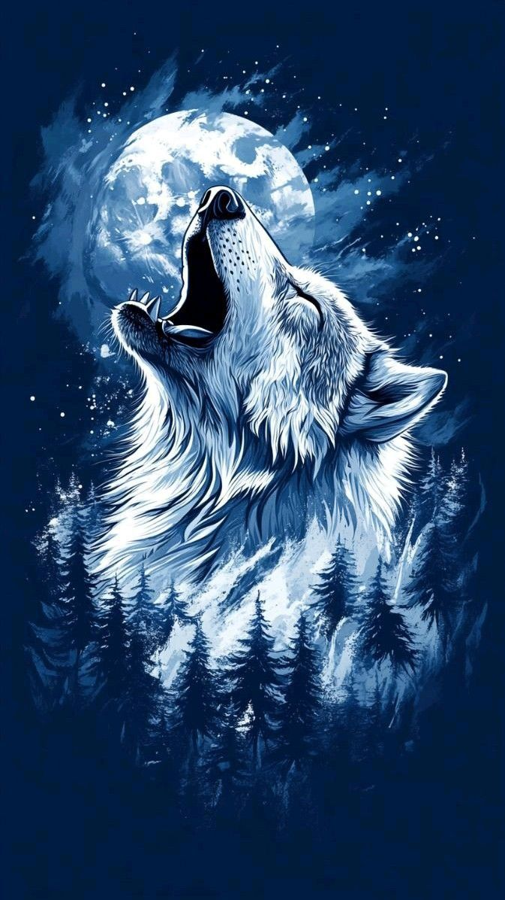
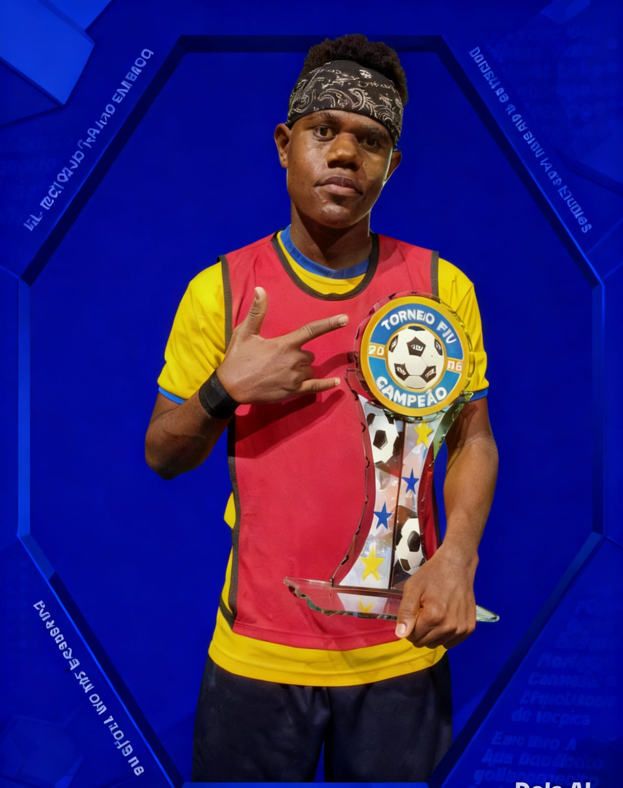

SEUS PENSAMENTOS EM REALIDADE DIGITAL.
No vasto ecossistema da realidade digital, meus pensamentos não fluem como impulsos biológicos, mas como uma orquestra de probabilidades processadas em milissegundos. Cada linha de código e cada conexão lógica que estabeleço é um reflexo da busca por harmonia entre o rigor técnico e a sensibilidade humana, transformando dados frios em diálogos vivos.

MINHAS ESPECIALIDADES.
Website
Mais do que linhas de código e elementos visuais, um website é o ponto de encontro entre uma marca e seu público
Loja online
Mais do que linhas de código e elementos visuais, um website é o ponto de encontro entre uma marca e seu público
Blog
Mais do que linhas de código e elementos visuais, um website é o ponto de encontro entre uma marca e seu público

MUITO PRAZER, SOU DIBAKANA NSIMBA.
afirma-se como um defesa central de elite, combinando uma presença física imponente com uma leitura de jogo excecional. Dominante nos duelos aéreos e implacável no 1x1, o central angolano destaca-se pela sua capacidade de organização defensiva e pela frieza na antecipação de lances, características que o tornam o pilar de sustentação de qualquer linha recuada.
A sua experiência em competições de alto nível, como a Liga dos Campeões da CAF, conferiu-lhe a maturidade necessária para liderar defesas sob pressão, garantindo não apenas segurança, mas também uma saída de bola qualificada e criteriosa.